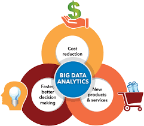

What is big data analytics
Big data analytics is the use of advanced analytic techniques against very large, diverse big data sets that include structured,
semi-structured and unstructured data, from different sources, and in different sizes from terabytes to zettabytes.

What is big data exactly? It can be defined as data sets whose size or type is beyond the ability of traditional relational databases
to capture, manage and process the data with low latency. Characteristics of big data include high volume, high velocity and high variety.
Sources of data are becoming more complex than those for traditional data because they are being driven by artificial intelligence (AI),
mobile devices, social media and the Internet of Things (IoT). For example, the different types of data originate from sensors, devices, video/audio,
networks, log files, transactional applications, web and social media — much of it generated in real time and at a very large scale.
With big data analytics, you can ultimately fuel better and faster decision-making, modelling and predicting of future outcomes and enhanced business
intelligence. As you build your big data solution, consider open source software such as Apache Hadoop, Apache Spark and the entire Hadoop ecosystem
as cost-effective, flexible data processing and storage tools designed to handle the volume of data being generated today.
